REPUBLIC OF THE NIGER
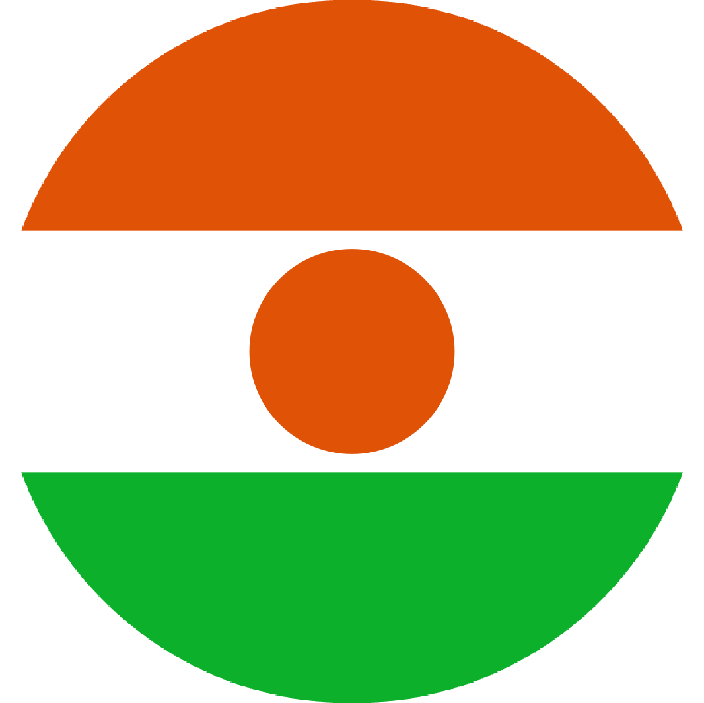
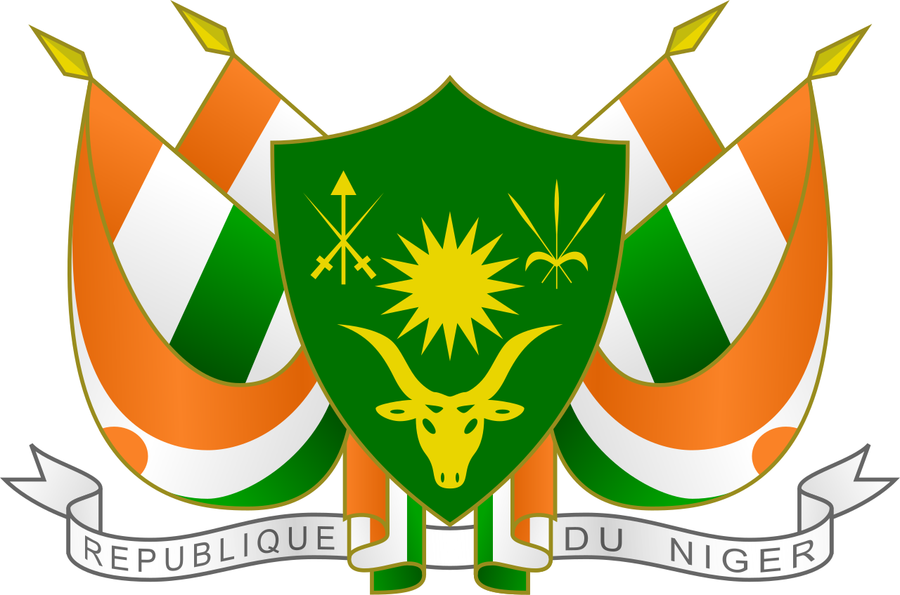
"Fraternity, Work, Progress"
FIRST PRESIDENT
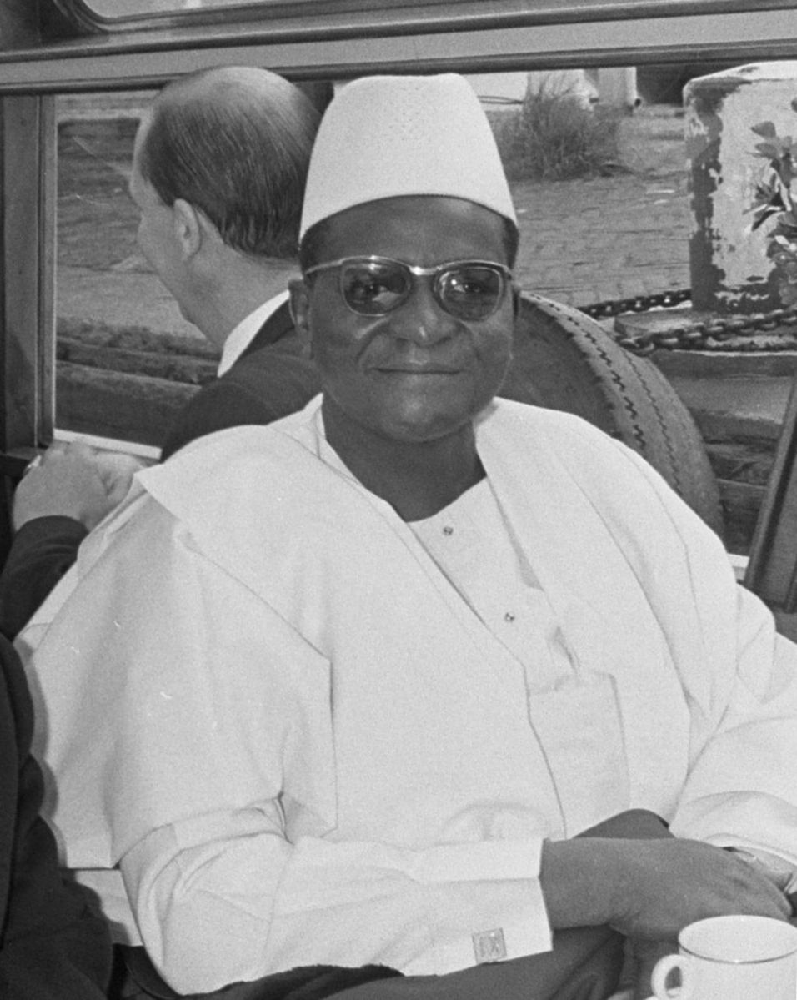
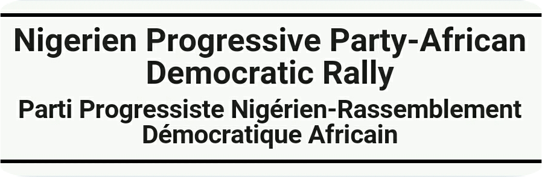
- Hamani Diori
- Political Party: P.P.N-R.D.A.
- In Office From: 10 November 1960.
- In Office until: 15 April 1974 [Deposed in a Coup].
- Born: 6 June 1916.
- Died: 23 April 1989.
- Aged: 72 Years Old.
SECOND PRESIDENT
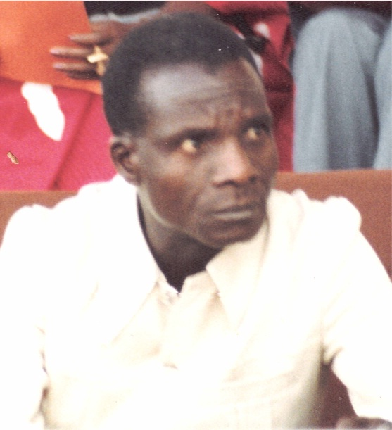

Niger Supreme Military Council
- Seyni Kountché
- Political Party: Military
- In Office From: 17 April 1974.
- In Office Until: 10 November 1987.
- Born: 1 July 1931.
- Died: 10 November 1987.
- Aged: 56 Years Old.
THIRD PRESIDENT
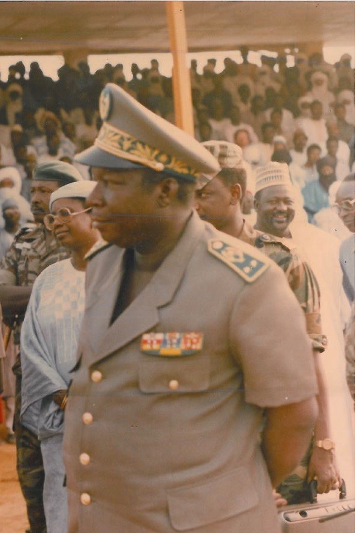
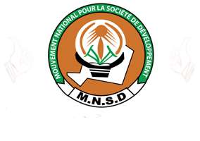
- Ali Saibou.
- Political Party: M.N.S.D.[after 1989]
- In Office From: 14 November 1987.
- In Office Until: 16 April 1993.
- Born: 17 June 1940.
- Died: 31 October 2011.
- Aged: 72 Years Old.
FOURTH PRESIDENT
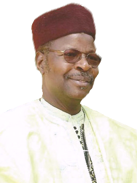
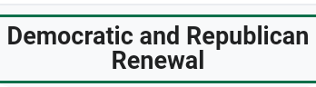
- Mahamane Ousmane.
- Political Party: C.D.S.-R.
- In Office From: 16 April 1993.
- In Office Until: 27 January 1996 [Deposed in a Coup].
- Born: 19 January 1950.
- Aged: 74 Years Old.
FIFTH PRESIDENT
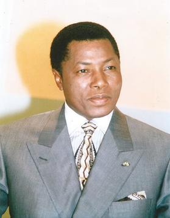
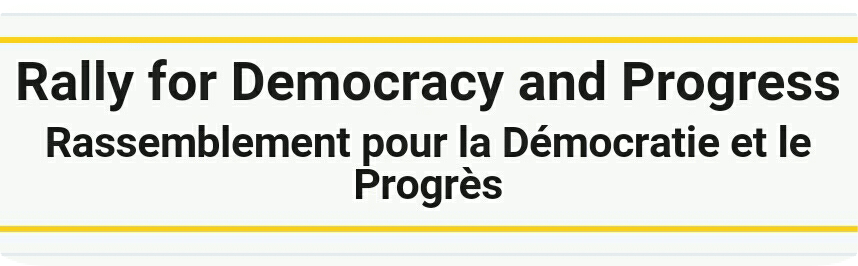
- ibrahim Baré Maïnassara
- Political Party: RDP-Jama'a; UNIRD
- In Office From: 27 January 1996.
- In Office Until: 9 April 1999 [Deposed in a Coup].
- Born: 9 May 1949.
- Died: 9 April 1999 [Assassinated in a Coup].
- Aged: 49 Years Old.
SIXTH PRESIDENT
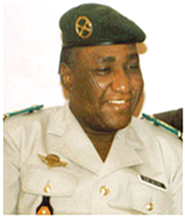
National Reconciliation Council of Niger
- Daouda Malam Wanké
- Political Party: Military
- In Office From: 11 April 1999.
- In Office Until: 22 December 1999
- Born: 6 May 1946.
- Died: 15 September 1946.
- Aged: 58 Years Old.
SEVETH PRESIDENT
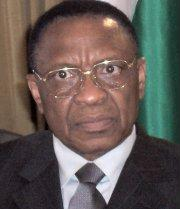
- Mamadou Tandja.
- Political Party: M.N.S.D.
- In Office From: 22 December 1999.
- In Office Until: 18 February 2010 [Deposed in a Coup].
- Born: ?- ?- 1938.
- Died: 24 November 2020.
- Aged: 82 Years Old.
EIGHTH PRESIDENT
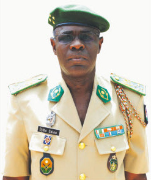
Chairman of the Supreme Council for the Restoration of Democracy
- Salou Djibo
- Political Party: Military
- In Office From: 18 February 2010.
- In Office Until: 7 April 2011.
- Born: 15 April 1965.
- Aged: 59 Years Old.
NINETH PRESIDENT
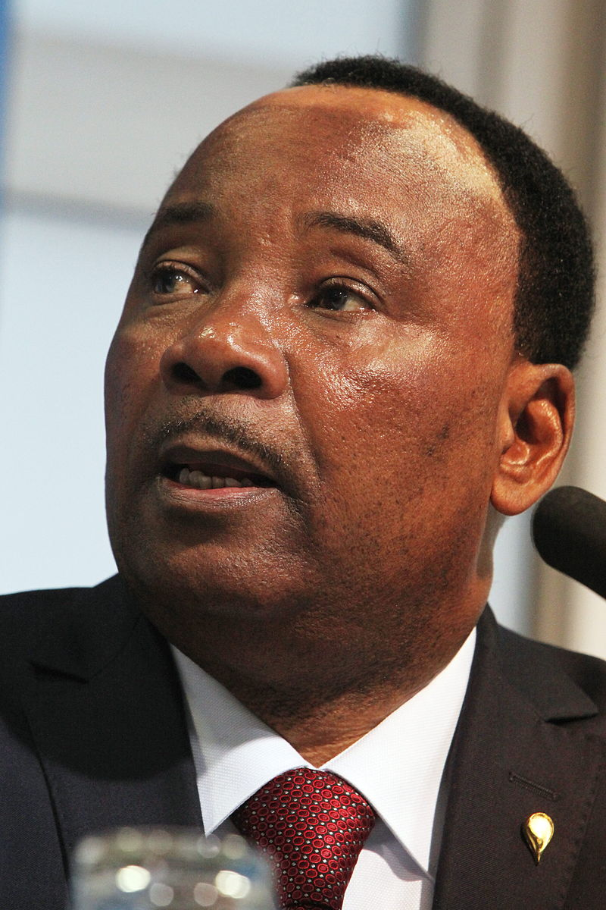
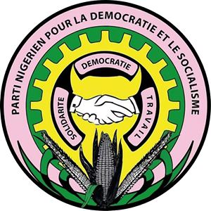
- Mahamadou Issoufou.
- Political Party:
P.N.D.S. - In Office From: 7 April 2011.
- In Office Until: 2 April 2021.
- Born: 1 January 1952.
- Aged: 72 Years Old.
TENTH PRESIDENT
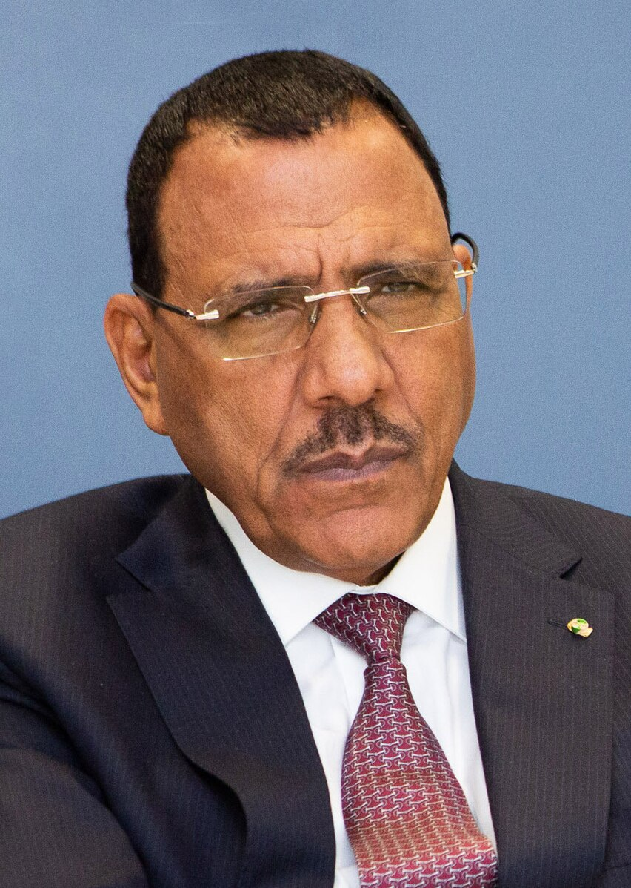
- Mohamed Bazoum.
- Political Party:
P.N.D.S. - In Office From: 2 April 2021.
- In Office Until: 26 July 2023 [Deposed in a Coup].
- Born: 1 January 1960.
- Aged: 64 Years Old.
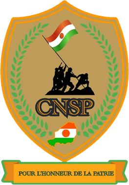
Incumbent: President of the National Council for the Safeguard of the Homeland
- Abdourahamane Tchian.
- Political Party:
Military - In Office From: 26 July 2023.
- In Office Until: Present.
- Born: ?- ?- 1960 or 1961.
- Aged: 63-64 Years Old.